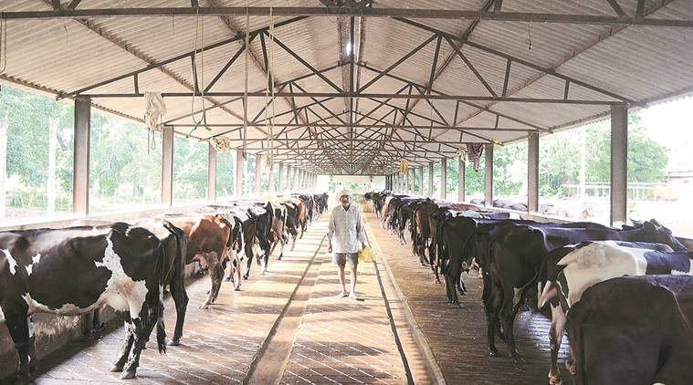
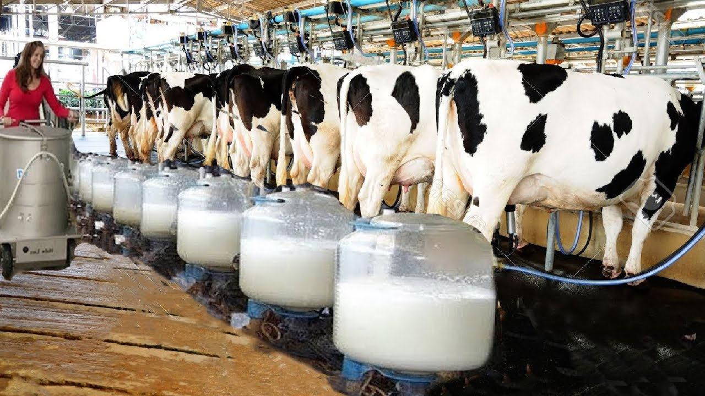
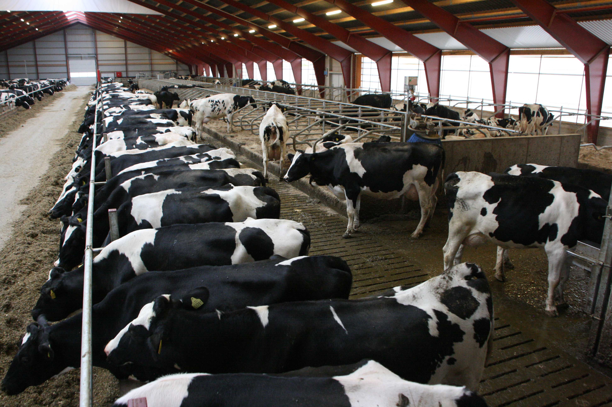
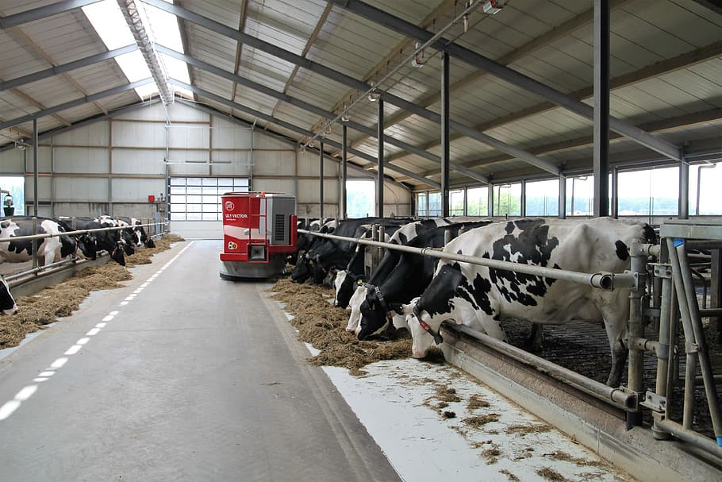

🥛 How Farmers Can Do Dairy Farming
India being a major agrarian economy has a deep connection with dairy farming since the Vedic era. Dairy farming in India contributes to 4% of its GDP. This business in India is a very lucrative one as we have its demand throughout the year. From starting our day with a hot cup of tea to mothers running after their kids to coax them to drink milk and eagerly waiting for ice creams in hot summer to desi ghee sweets in Indian festivities, we have milk everywhere as a staple. The dairy business also provides a tool for socio-economic development, and the Government of India has introduced various schemes and initiatives aimed at the development of dairy farms in India.
So, if one is planning to start over with a dairy farm these are certain things to keep in mind -

🏭 What does your market say?
Like any other business, it is important to study the market that one wishes to serve such as the geography, Incomes and the household types (Nuclear or Joint) in order to analyze what type of milk will sell the best. Whether one wishes to launch a Cow Dairy Farm or a Buffalo Dairy Farm will depend on the fat consumption and requirement of the market. Buffalo Milk is high in fat while Cow Milk has lower fat content.
We as Indians look for value for money in everything; even milk. Many families even today boil milk (Even though it’s pasteurized) to get the ‘Malai’ out of it and make Ghee. It is an age-old tradition which allows families to not only save on costs by making Ghee but reduce fat from milk and also consume organic homemade ghee.
Areas high in concentration of nuclear families with high disposable income will prefer buying low-fat milk and will be able to pay a premium for cow milk. Areas with the population of children less than the age of 10 will see higher demand for A2 desi cow milk for its ease of digestion!

🐄 The breed
It is extremely important to know the tastes and the practices of the market or the city you plan to launch your dairy farm in before you choose the breed. There are numerous Indian buffalo breeds like Murrah, Surti, Jaffarabadi, and popular cow breeds like Gir, Sahiwal, Red Sindhi, Tharpakar which are Indian. Western breeds like Holstein Fresian, Brown Swiss, Jersey are majorly used for meat production. Indian cow breeds produce milk containing A2 beta-casein protein which is considered to be the next best after mother ‘s milk. Indian breeds produce significantly lower quantities of milk compared to the western breeds and will govern the pricing of your product.
🎗️ The Breed Quality

While buying the cattle, try to milk the cattle 3 times before buying. For a buffalo, average milk production should be a minimum of 12 litres and for a cow, it should be a minimum of 16-17 litres. To get a regular supply of milk, do not buy all cattle at one go, one should buy at a monthly interval of 2 months.
🌽 Nutritious fodder for a louder ‘MOOOO'
Providing your cattle with clean drinking water is of tantamount importance. No animal requires clean drinking water as much as milk-producing animal requires. To produce 1 litre of fresh milk cattle requires 5 litres of clean and fresh water.
Coming to food, always feed cattle with loads of green fodder. Usually, people consider buying fodder in the peak seasons of Rakshbandhan to Baisakhi as the weather in those months favours the growth of green grasses and hence, enough green fodder is available. Green fodder helps in producing more milk and saves the cost of feeding for the owner. Timothy, Clover, and Alfalfa are the best kinds of green fodder to be given to cattle.
🏚️ A house for them
Milk producing animal's shed should not be a pigeonhole in some corner of the town. It should be well ventilated; floors should be non-slippery. The shed should be away from the roadside at least 900 sq.mt away and not to be positioned at lower lying areas as during heavy rains water will fill up those areas first. Generally, 40-80-sq. ft open space is required per animal.

💉 Keep them disease-free and fit
It is recommended to have a veterinary doctor close by to the farm to ensure ease of access and availability. Always keep the cattle vaccinated timely by a veterinary doctor. To keep them fit, leave them untied in a shed, as moving freely will reduce bloating in them. In case the dairy farm has over 100 cows/buffalos then it is highly recommended to appoint the Vet on the farm itself.
🛒 Marketing for the dairy farm
Although the barriers for new entrants to start a dairy farm is low, but the competition in this sector is very high. Figure out what will be the unique selling proposition of a dairy business whether we are serving A2 desi milk, milk for the lactose intolerant, or we have a special app or a strong database of the customers who have subscribed to the monthly plans or quarterly milk plans of your dairy farm etc. anything it can be.
As said the dairy farm business is a lucrative business but at the same time it has its own set of numerous hurdles from getting a consistent volume of milk to keeping cattle disease-free. For, a dairy farm to stand out completely it is essential to understand the market consumption pattern which it will be serving and then design solutions revolving the pain points of the consumers.
📞 CONTACT US
Featured Posts

Agricultural facilities include facilities ranging from entire holdings to installations.

Indeed, at the close of the century of greatest agricultural expansion, the dilemma of the farmer had become a major problem.

On farms, IOT allows devices across a farm to measure all kinds of data remotely and provide this information to the farmer in real time.

Farming is a remarkable part of the economy in India, as it adds about 18 per cent of the absolute GDP.

“Do what you love to do, and be around things that make you smile.